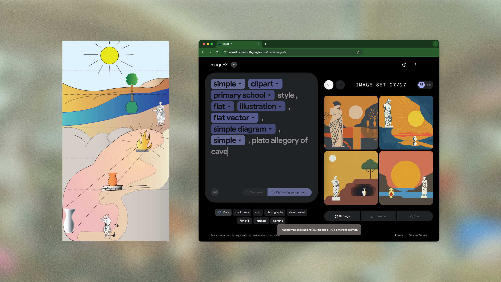
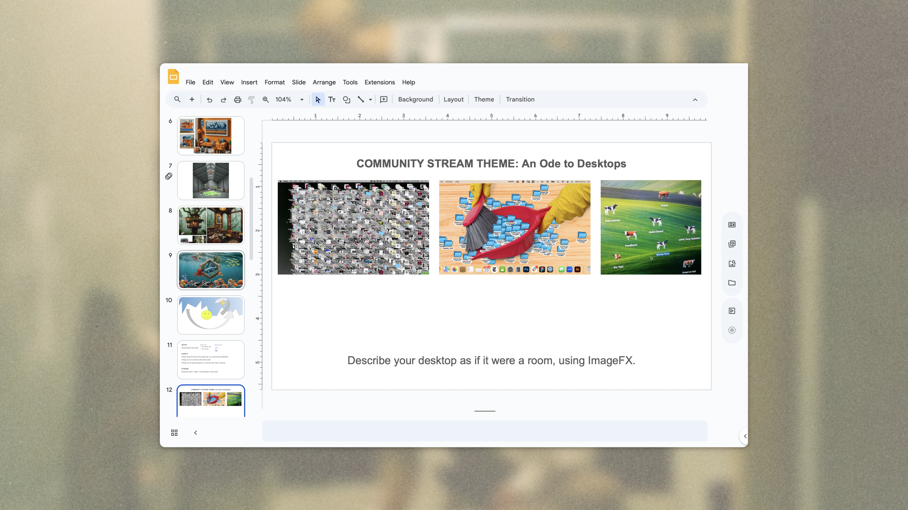

Shorter vignettes to surface how I work, problems I’ve tackled; comfortable collaborating across domains where ambiguity is high and constraints require resourcefulness and designerly translation.
Disputes Tooling Opportunities
Feature scoping & assessing impact given cross-functional priorities
At Mercury I collaborated with the Disputes operations team, who work across Personal Banking and Business Banking, to identify opportunities to improve tooling. Without dedicated engineering resources I was able to ship 2 frontend changes, self-scoped via product data queries/analytics.
Cross-functional discussion and shadow sessions emphasized how multiple realities—specialists’ daily caseload, their procedures, EPD product vision, and higher-level business goals—could all be felt at once, and yet be unevenly synced due to the intricacies of change management and the different paces at which teams work.

CAPTCHA Diary
LLM-based design/dev
A Firefox extension that records Google reCAPTCHA and hCaptcha encounters. Developed as a research tool for my graduate thesis, the Diary makes the data collection environment itself data. Working with coding agents meant I was able to context switch much earlier, directly inspecting network traffic to learn about my subject matter. While very much a “building for myself” project, the technical hurdles I encountered helped me better gain a developer sensibility.

Labs: ImageFX Speedrunning Championships
Tool adoption (& inspection) via game
Concept, facilitation, and development of a competitive game where participants recreate target images with ImageFX, given a category ((art) historical, diagram/information, internet/pop culture, wildcard) and a time constraint of 8 minutes. The format helped us gain a sense of people’s mental models of AI image synthesis through trial and error. Initially tested with internal teammates on Discord and Google Slides, the game was later implemented at a public event in LA.

{kind=link}
Labs: Desktop Metaphors
Exploring new use cases of a genpop product
Facilitated a collaborative Google Slides-based workshop where community members shared their desktop setups, then reimagined them as architectural spaces using ImageFX. I modified a MusicFX track in the background live as participants explored. The workshop surfaced new opportunities for cross-tool interaction patterns.
